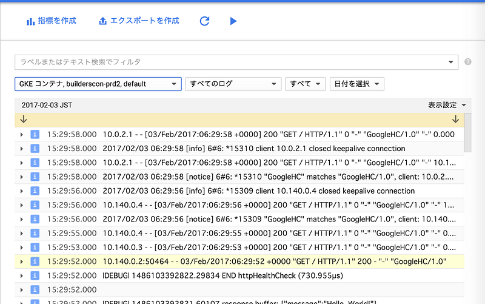
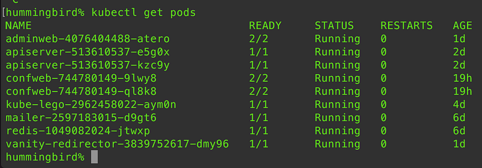
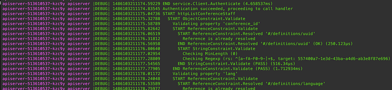

kubernetes使いは全員 stern を導入すべき
kubernetes使いは全員 stern を導入すべき
kubernetesを使うとコンテナをポンポンあげられてもう最高！なんだけど、開発中に地味に面倒なのがログ。
Amazon配送商品ならKubernetes: Up and Running; Dive into the Future of Infrastructureが通常配送無料。更にAmazonならポイント還元本が多数。Kelsey…www.amazon.co.jp
Google Container Engine(GKE)を使っている限りは基本Stackdriverがあるのでそちらにログをガンガン投げつけられるんだけど、これがさ… リアルタイムで見るにはもうとにかく読みにくいんですよ。

まぁこれは基本的に膨大なログを見ている時に、ピンポイントで絞り込み検索をするという行動を前提としてるからだと思うんだけど、デバッグとかしてるときは「スゴク、コレジャナイ感…」がするわけです。
なので、そんな時はもう素直にkubectl get podsして、kubectl logs -f …. している自分がいました。

まぁこれでも充分なんです。充分なんですけど、辛い事が二つあって。
まず複数のコンテナにロードバランスされるペイロードに関しては自分が見てるコンテナにアクセスが来るとは限らないから全部のコンテナのログを見てるか、自分の見てるコンテナにアクセスが来るまで読み込み続けなければならない。
もうひとつは、開発をしている間の話なので、kubectl applyでdeploymentをガンガン入れ替えているのでコンテナもどんどん世代交代するわけです。そうすると… そう、当然コンテナはデコミッションされたらアクセスが来ないし、その後削除されたらそもそもkubectl logs -fで追ってた接続も切れるので、もう一度つなげ直さないといけない… 辛い。
ある程度アプリができあがってくるとエラーのロギングとかもわりとちゃんとできてて、その特定に困らないのですが、今回新しく kubernetes上で動作するアプリを書き始めたら、まだたったの数百行しかないコードなのに追うのがもう面倒で面倒で。
しかし時は2017年。Twitterでつぶやくと正解が提示される世界でした。
なに？sternとな？
やばい、最高すぎる。podのインスタンス名を調べて入力してた自分が馬鹿みたいだ。stern だと、podのインスタンス名 じゃなくてpodのスペックに書いてある名前を雑にいれるだけで、それにマッチする全部のpodのログがだだーっと流れてくる。それぞれのpodインスタンスの名前が色付きで行頭についているので見間違いもない。最高だ。

そしてなおかつ、kubectl applyした後やkubectl delete podsした後でも、ちゃんとそのpodのスペックをk8s APIからwatchして、新しいインスタンスがあがったらそっちのログを出してくれる。最高だ！
とにかく最高！を言いまくった。
というわけでstern最高。kubernetes使いはもうインストールしておくしかない。homebrewメンテナをしてる superbrothers さんに感謝の念を送りつつ、みんなsternを使いましょう。